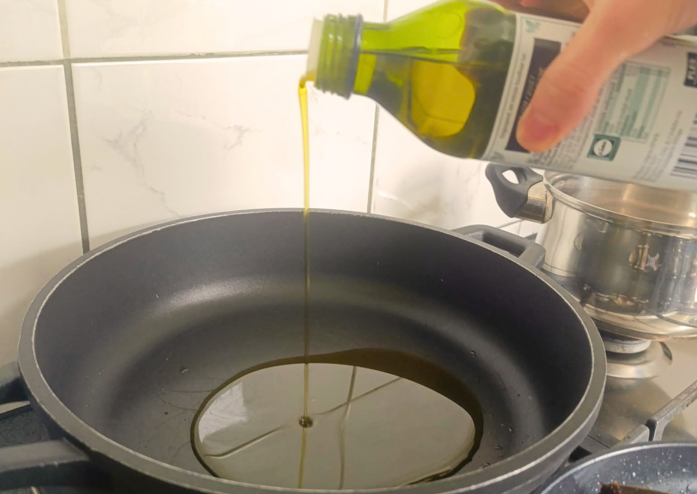
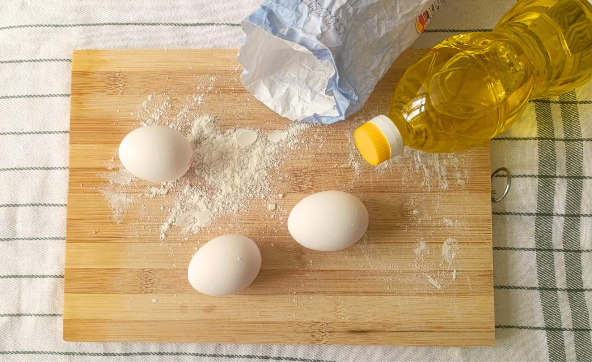

Cooking Techniques
There are hundreds of cooking techniques nowadays, and there can be multiple techniques for making the same dish. However, knowing the basics is enough for a beginner.
In here , you will learn how to boil and when to add ingredients, how to tell when oil is hot enough, how to make dough with the right soft consistency and more. These are the kind of skills you should learn as a beginner
Boiling
Boiling, it is something you will probably use quite often in the kitchen. It is one of the easiest and least messy technique UNLESS you know what to do and when to do.
When to add your ingredients: Not everything should be added at the same time(ex: potatoes they must added to cold water then slowly boil it and pastas they opposite to potatoes they must be added to boiling water because otherwise centre of the potato wont cook properly).
IMPORTANT!!!
Seeing small bubbles DOSENT MEAN ITS WATER IS BOILING!!! You should see CONTINUNOUS BUBBLES RISING TO SURFACE

Frying
Frying is something you should be careful with. If the oil is too hot, it can splash and burn your skin, so knowing when the oil is hot enough is important.
You can check the temperature with a cooking thermometer but you don't need to buy it especially if you are beginner , there are simple ways to check if the oil is ready. One common method is to place the end of a wooden toothpick into the oil. If small bubbles form around the wood the that mean oil is starting to heat up. If there are no bubbles it need more time. Some oil splashing is normal when frying. If there is a lot of splashing just lower the heat it will decrease.
Getting the right temperature is important because different foods need different amounts of heat.(For example: when making French fries, the right cooking temperature helps to create a crispy outside while keeping the inside soft.).

Making Dough
In my opinion, making dough is one of the hardest techniques because there are many different ways to do it, and even a small change can affect the final result. Even the brand of flour you use can make a difference. This is what makes making dough so complicated at first. However, once you learn how to make a simple dough, you can use it to make many different things.
All you need is:
- Flour (Good Quality)
- Water
- Yeast
- Salt
First, start by mixing your dry ingredients (flour, yeast, and salt). Before adding the flour, don't forget to sift it if you have a sieve. If you don't have one, it's also okay to use the flour directly. Secondly, add your water, but not all at once. Knead the dough with one hand while pouring the water with the other. If the dough is sticky, oil your hands or add more flour.
The ratio depends on what kind of flour you use, but most of the time, you need a little less water than flour. If your dough is too liquid, you can add more flour or water depending on the situation. Lastly, I would recommend covering the dough with a clean towel after kneading and letting it rest for at least 1 hour.
